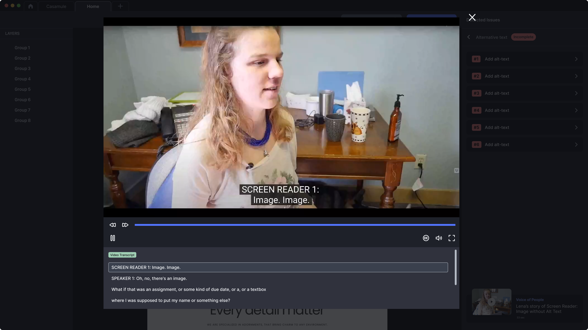

Problem
Designers default to designing for the user closest to themselves. Without lived encounter of disability, the failure modes of a typical interaction (missing alt text, focus traps, sense-specific copy) are invisible from outside, and good intentions alone don’t surface them.
Simulation-based empathy exercises (blindfolds, taped fingers, mouse-only-for-a-day) are widely critiqued. They cosplay limitation without conveying the lived experience of adaptation, and they reframe disability as deficit rather than a different, expert mode of interaction. A blindfolded designer who fumbles for an hour learns that being blind is hard. A scenario card built around a blind user’s actual task flow teaches what the typical UI fails to provide.
Pattern
Build a library of disability-scenario cards. Each card pairs four elements:
- A real user task. Specific, single-flow. “Shop for furniture online,” not “use a shopping app.”
- A user profile, second-person present-tense. “You’re Sarah, 32. You’re visually impaired. You rely on a keyboard and a screen reader to interact with your computer. The screen reader converts text and images into speech.”
- The actual interaction model. What the user hears, what they press, where the focus moves at each step.
- The specific UI breakdowns surfaced by walking the task. The product gallery has no alt text. The price field is announced as “forty” without “dollars.” The buy button isn’t reachable by Tab.
The cards are narratives, not exercises in “experiencing disability.” The user in the card is the expert; the designer is the audience. Walking the task surfaces the breakdowns the typical interface introduces, not the limitations of any individual.
Reference
This pattern generalizes the “Voice of People” feature of Beyond, Young Kim’s 2023 MFA thesis at the School of Visual Arts. In Beyond, real screen-reader users speak directly to the designer in short video segments, narrating where a specific page’s missing alt text or broken focus order excludes them from the task. The pattern in this library extracts that idea into scenario cards usable in any team’s design review or kickoff — with or without Beyond.
See Beyond MFA thesis (opens in new tab) for the original research.
Visual examples

How to use
- Design review opener. Draw one card. Walk the task end-to-end as the user before any visual critique begins.
- Project kickoff. Distribute three cards across the team. Each person walks one task and reports the breakdowns surfaced.
- Accessibility backlog seed. Every breakdown a card surfaces becomes a ticket. The cards convert empathy into specific work.
What this is not
- Not a replacement for accessibility testing with people who have disabilities (#10). The cards prepare a team to test responsibly; they do not produce findings from actual users.
- Not simulation. The user in the card is the expert; the designer is the audience.
- Not a checklist. The goal is to surface specific breakdowns in a specific task, not to score the design.
WCAG mapping
Empathy work isn’t itself governed by WCAG, but the breakdowns the cards surface map directly to specific success criteria. The cards make the abstract criteria concrete.
- 1.1.1 Non-text Content (opens in new tab) A surfaced by missing alt text in image-heavy task flows
- 2.1.1 Keyboard (opens in new tab) A surfaced by keyboard-only walkthroughs of any card
- 1.3.1 Info and Relationships (opens in new tab) A surfaced by screen-reader announcement order vs. visual order
- 4.1.2 Name, Role, Value (opens in new tab) A surfaced when icon-only controls have no accessible name
Related patterns
- Color contrast (#02), where the cards reveal where 4.5:1 fails for body text in real reading contexts
- Inclusive UX copy (#03), where the cards expose sense-specific verbs in a way an abstract WCAG review doesn’t
- Accessibility testing with people with disabilities (#10), the validation the cards prepare the team to run responsibly